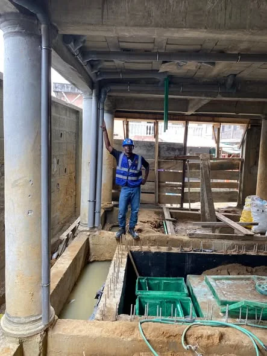
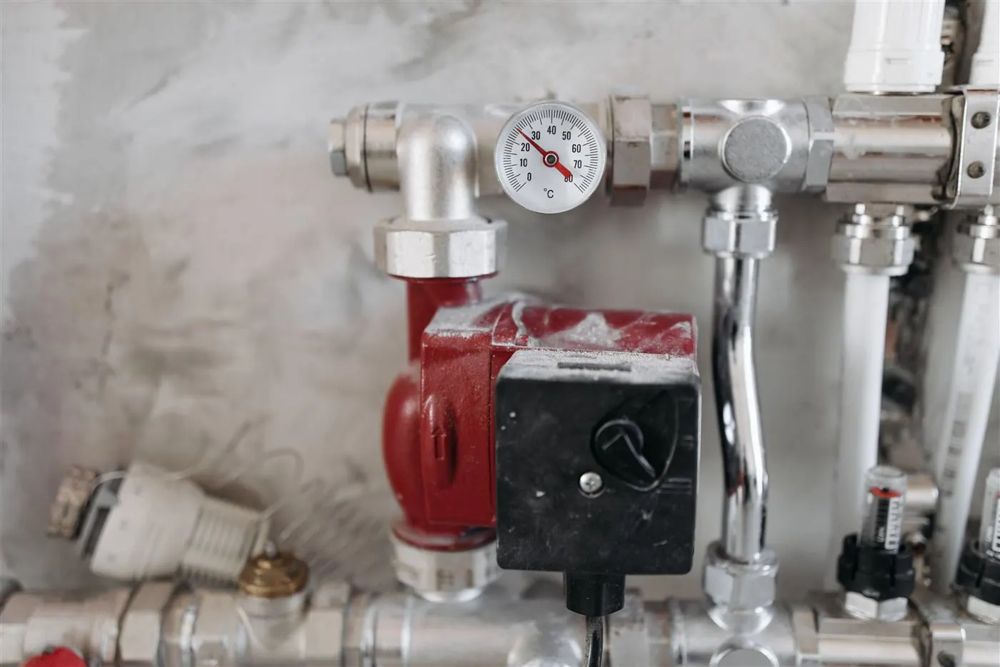

Plombier urgence
Tuyau éclaté, fuite qui coule vite, eau coupée. On arrive en priorité, à Douala, Yaoundé et dans l'Ouest.
Appeler maintenant
Plombier Tadaval, l'expert de vos installations sanitaires. Plomberie, tuyauterie & réseaux hydrauliques à Douala, Yaoundé et dans l'Ouest : on intervient vite et proprement.
Un matin, plus d'eau au robinet. Ou pire : une fuite cachée dans le mur qui fait grimper la facture et abîme les carreaux. Vous appelez un plombier, il ne vient pas, ou il revient trois fois sans régler le problème. Quand une installation sanitaire est mal faite, on le paie pendant des années.
Plombier Tadaval change ça. Spécialiste des installations sanitaires, nous localisons le problème avec précision, nous expliquons ce que nous allons faire et nous réparons proprement, sans casser plus que nécessaire. Du simple débouchage aux réseaux hydrauliques d'un chantier, vous avez un interlocuteur, un devis clair et un travail garanti, à Douala, à Yaoundé et dans l'Ouest.
Découvrir TadavalPlombier autour de vous à Douala, Yaoundé et dans l'Ouest : choisissez le service dont vous avez besoin, on s'occupe du reste.
Tuyau éclaté, fuite qui coule vite, eau coupée. On arrive en priorité, à Douala, Yaoundé et dans l'Ouest.
Appeler maintenant
Salle de bain complète, WC, cuisine. Que vous construisiez neuf ou que vous rénoviez, on installe tout proprement avec une garantie.
Demander un devis
Fuite visible ou cachée dans les murs. On localise le problème rapidement et on répare sans casser plus que nécessaire.
Demander un devis
WC bouché, évier qui ne coule plus, douche qui stagne. On débouche vos canalisations sans abîmer vos carreaux.
Demander un devisAppel, WhatsApp ou formulaire : décrivez votre souci de plomberie, on vous répond tout de suite.
On analyse le problème et on vous donne un prix clair, avant de toucher à quoi que ce soit.
Notre plombier intervient avec le bon matériel, proprement et sans casse inutile.
Vous validez le résultat. Chaque installation est livrée avec une garantie.
Soucis de plomberie ? Voici les réponses aux questions que l'on nous pose le plus souvent.
Nous intervenons à Douala, à Yaoundé et dans toute la région de l'Ouest. Appelez-nous ou écrivez sur WhatsApp : on vous confirme tout de suite si nous pouvons venir chez vous.
Oui. Nous évaluons votre besoin et vous donnons un prix clair avant le début des travaux, sans engagement.
Pour une urgence (tuyau éclaté, grosse fuite, eau coupée), nous venons en priorité. Pour les autres demandes, nous convenons ensemble d'un créneau rapide.
Nous localisons d'abord la fuite avec précision, pour ne casser que le strict nécessaire, puis nous réparons et remettons proprement.
Oui. WC bouché, évier qui ne coule plus, douche qui stagne : nous débouchons sans abîmer vos carreaux.
Oui, en neuf comme en rénovation : salle de bain, WC et cuisine, avec une garantie sur l'installation.